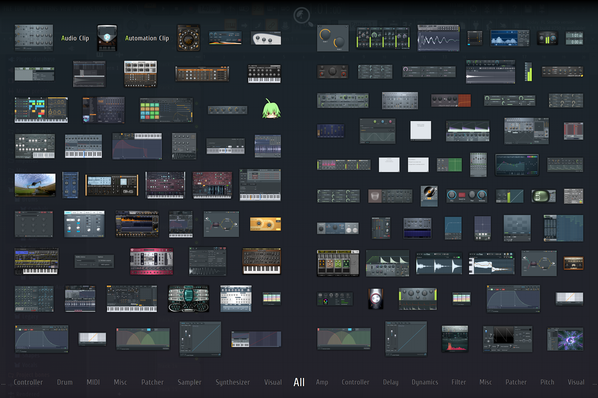

This sprint consisted of mostly introductions and onboarding activities. It was great to meet my squad and fellow audio members, and it was also great to see the people I had worked with over the summer in-person! Though I had done Studio over the summer, I hadn't known much about Multiply, other than the occasional 3D model of a soldier cat floating around the server.
A lot of audio discussion had been regarding two things: the cultural setting of the game, and how to make cat sounds. It was fun coming up with cat sound sources! Emily, our audio lead, said that her cat made a bunch of angry growling noises that she had recorded, and a few of the other members had sent videos and ideas about how to make cat noises, so it looks like this is gonna be fun haha. We have set up a Drive folder to store and share cat samples (and other samples) so that we can all use them in our compositions and/or sound effects. I plan on trying this video out to see if I can make anything useful.
I like to listen to a bunch of music that matches the vibe of what I'm going for, so that I know how to make my own music. My task for this week was to make tutorial music, so my mind went to more mellow music that still sets the pace. It shouldn't take a foreground, but it also shouldn't be too background. I looked at "Training" from Fire Emblem: Awakening , "Opening" from Wargroove , and a few others. One piece that caught my eye was "Careening into Danger" and "Stand Your Ground" from Final Fantasy XV (see the video below). The former plays during the gameplay tutorial, and the latter is one of the main battle themes in-game. They're the same track, but the former is more mellow and uses lighter instrumentation. That seems really cool to me, and I wanted to do something like that for this game! Maybe I will get to, but I'd need to know what the main battle music would sound like, and what vibe and instrumentation we're going to be doing in order to make it really fit. Maybe some other time.
This actually was a pain point this sprint. I'm fairly comfortable with my DAW of choice: FL Studio. I know where things are and how to implement them, and I know what to search up when I don't. But I usually only make synthesized sounds. For example, all of last cycle's music is synthesized, and that's where I'm at my most comfortable. Making the shift to real/realistic instrumentation was tough, since I don't know too much about how they are meant to be played. But more problematic than that for me was finding instruments that sounded good. Below is a screenshot of FL Studio's plugin list:
A lot, right? A lot of these are drum sequencers, many different types of synthesizers, and many useful tools and such. One in particular is Sakura, and it is meant to be a good emulator of string instruments. Though, for the life of me, I couldn't figure out how to make it sound realistic at all, let alone good enough. For context, I use MIDI input to make these tracks, and maybe it was how I was using my MIDI controller or some setting/customization that I've been forgetting, but the instruments didn't sound like I intended. Thus, I'm taking this as a draft to do more iterations on. I'll probably look for a good high-quality VST (probably free haha) for my projects. See my creation below!
As community manager of WolverineSoft, I took care of behind-the-scenes work for the Studio as well! It came down mainly to booking rooms and coordinating industry events. Particularly, Midwest Games is coming to campus soon, so I was working with Antonio to plan all of those details, like the room and schedule.